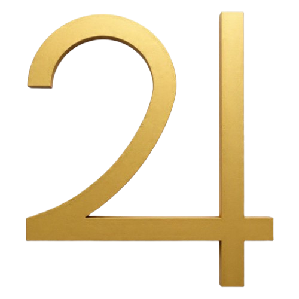
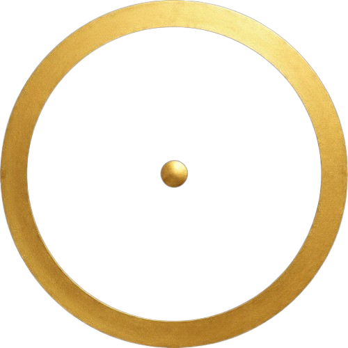

MUNAL
3521
MUNAL
3521
Quiromancia
El prefijo <<-quiro->> deriva del termino griego que significa mano <<-manda->> de <<-mantela->> que significa adivinación. Arte adivinatorio donde a través del estudio de la mano se puede interpretar el carácter y por venir de los seres humanos
| Monte de Venus: |
Monte de Júpiter: |
 | |
|
Monte de Saturno: |
Monte del sol: |
 | |
|
Monte de la luna: |
Monte de Marte: |
||
|
Monte de Mercurio: |
|
Línea de la vida: |
Línea de la cabeza: |
||
|
Línea del corazón: |
Línea del destino: |